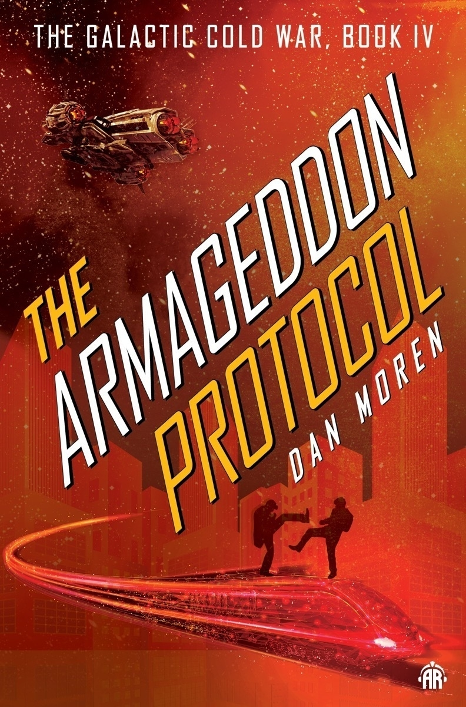

Det er jo fortsatt litt tidlig for Tapestry (og Reeder for den del), men det er litt sånn at jeg skulle gjerne tatt noe fra førstnevnte og noe fra sistnevnte, så hadde jeg hatt en perfekt app for denne bruken.
Begynner å bli litt lei av at en løsning er å gjøre noe med MTU.
Igjen.
Ferdig med The Armageddon Protocol, som vel er den fjerde og siste boken i «The Galactic Cold War».
Underholdende nok, og jeg har jo i større eller mindre grad likt de andre bøkene i serien (selv om jeg ikke har skrevet noe om The Caledonian Gambit

Jeg har jo også nevnt at det føles som en serie som omhandler noe som ligner den kalde krigen mellom USA og USSR, dog i fjern fremtid.
Og som tidligere nevnt, bøkene har en konsentrert historie selv om verdenen er stor.
Og etter å ha lest den siste boken i serien, så er vel kanskje det den største svakheten med den. Den har noe som føles kjent, men samtidig ikke. Hadde Dan Moren klart å fortelle samme historien, men med CIA og KGB så hadde dette kanskje vært hakket bedre.
Men jeg lot mer underholde, og det er jo klart at en person jeg som oftest har forbundet med Apple punditry har gode litterære evner.
Men akkurat det geopolitiske er ikke så interessant i denne bokserien. Selv om verdenen er stor, så er historien som fortelles konsentrert. Kovalic er Ethan Hunt. Tapper, Eli, Nat og Addie utgjør resten av laget fra Impossible Missions Force, eller som det heter i bokserien, Special Projects Team. Alle har sine roller. Dan Moren balanserer fint mellom å gi figurene bakgrunn, personlighet, vennskap og konflikter uten at det stjeler fokus fra historien og fremdriften.
De sier at Jeppe drikker, men ikke hvorfor han drikker
Jeg tror Jeppe jobber med data og sånt. En antagelse som kanskje er basert på siste jobbuke.
Av en eller annen grunn har jeg tenkt på denne de siste dagene.
Ikke lest alt, men ser jo at det har vært litt vel mange ord mellom to av de fremste indieweb personlighetene jeg har et forhold til (micro.blog og omg.lol).
Og har litt lyst å skrive mer om det, men det får bli imorgen.
Men, for å sitere en av mine favorittskribenter fra baseball
You are what you do, not what you say you are
(kommer nok til å bli brukt igjen i morgen).
Spurte Raycast AI om å oversette «stemoderlig behandlet».
The phrase “stemoderlig behandlet” translates to “treated with motherly care” or “treated in a motherly way” in English. It conveys a sense of nurturing or gentle treatment.
Litt uenig i den, tror jeg omformulerer meg.
Man husker jo en gang at det føltes som alle sendingene til Dagsrevyen hadde innslag om uroligheter i Belfast, sammenstøt mellom britiske militære og sivilbefolkningen, og bilbomber utplassert av IRA.
Sannsynligvis spiller nok hukommelsen meg et lite puss om hvor ofte det var innslag, men uansett, så var det nok ikke et trivelig situasjon å være oppe i.
Nå er ikke denne konflikten noe jeg har satt meg så veldig godt inn, men det skal sies at Say Nothing gjør at jeg faktisk vurderer å gjøre det. En historiebok eller to om bakgrunnen hadde nok vært interessant å pløye meg igjennom
For dette er en god serie som klarer å vise hvordan det sannsynligvis var. En interessant historie med interessante figurer.
Og tenke seg til at det er bare 27 år siden Langfredagsavtalen,.
I juleferien så begynte jeg å få noen videoer fra de som jobber med å korrigere de som tror på en flat jord (naturlig nok ettersom en del av sistnevnte ble invitert på en tur til Antarktika for å observere 24-timers sol der med en gjeng fra de førstnevnte.
Og det virker som om noen av de sistnevnte (de som tror på flat jord) kanskje endret virkelighetsforståelsen sin.
En del av disse videoene er interessante for de også er lærerike, og de ofte sabler ned sjarlataner. Men uten å diagnostisere mennesker basert på videoer, det er noen av disse som tror på flat jord som mer minner om psykologiske kasuser enn «verdige» motstandere og kanskje fortjener litt mer empati enn hån, det er tydelig at de sliter med noe.
Det er normen at man har en slags oppsummering av året som er gått. Ettersom jeg lever verdens mest kjedelige liv så forholder jeg meg til hva jeg har fortært av populærkulturelle medier det siste året. Noe som medfører at alt ikke nødvendigvis er fra 2023.
Jeg har hørt færre podkaster i 2023 enn noen gang tidligere. Jeg byttet ut min eneste techpodcast The Talk Show etter øynene mine nestet poppet ut når Gruber var dustete rundt lanseringen av Threads. Byttet den ut med Upgrade (byttet og byttet, har jo hørt på den før). Ikke så veldig stor fan av Myke Hurley, men Jason Snell er alltid en stemme som er verdt å høre på. En av de bedre techpunditene fordi han har evne til å se en sak fra flere sider. Og ikke bruker 12 minutter på å forklare at 1+1 = 2.
Ellers likte jeg The Redemption of Jar Jar Binks. Spy Valley og Agent of Betrayal var spennende podcast fra spionasjens verden. Ellers har jeg holdt meg til de jeg har hørt på lenge.
Ikke mye å skryte av her. Skal jeg lage en Topp 3, så vil den inneholde alle bøkene jeg har lest/hørt i år. Litt skuffende fra min side, men humøret for lesing har egentlig ikke vært til stede i år. Men Jack Reacher #27 var underholdende nok.
Ut i fra mine notater har jeg sett 15 17 filmer i det herrens år 2023. Og på Letterboxd har jeg gitt de 15 filmene score fra 2,5 stjerner til 5. Min Topp 5 blir som følger.
Men når man ser i snitt litt over en film i måneden så blir det jo ikke det største utvalget. For det er jo ofte litt sånn at for meg så er det fortsatt litt mer utfordrende å sette på en film på 2+ timer enn en serie på 6-10 episoder på cirka samme antall timer (fordi jeg naturlig nok ser på en serie som oftest over flere uker). Kanskje prøve en liten endring der. Matt Birchler har hatt et mål å om se flere filmer i år og har dokumentert det på Mastodon. Han er visst på over 100 i år. Det blir litt for meget for meg, men jeg finner det naturlig med å ha et mål om å se på en film i uken. Så i den grad jeg har noe prosjekt for 2024, så blir det vel det.
Problemet er for min del i alle fall ikke mangel på gode filmer, men det er mer å ha humøret til å se enkelte filmer jeg har lyst å se.
Som vanlig er jo TV, eller kanksje mer korrekt serier, den underholdningsformen jeg har brukt mest tid på. Og så mange at jeg har notert ned 40ish serier som jeg synes har vært gode (kommer ikke til å nevne alle). Selvfølgelig så er jo en god del av de seriene ting jeg likte, men naturligvis aldri vil være med når jeg skal vurdere de for en Topp 5 liste. Mange de jeg har notert ned er også seriefinalesesongen, og må jo si at mange av de virkelig hadde telemarknedslag og 5 x 20 i stil for sin siste sesong.
Noterer meg at det er to HBO og tre Apple TV+ serier på min Top 5.
Hederlig omtale til disse. Både Taskmaster og Kongen Befaler var gode i år. Og særlig nyskapningen Taskmaster Australia (som brukte det eneste gode med Taskmaster New Zealand, innspillingsstedet). Jack Ryan er en kompetent spionserie (og da snakker jeg ikke om siste sesong som jeg ennå ikke har sett). Welcome to Wrexham var fantatisk (og jeg har bare sett første sesong). Så endelig ferdig første sesong av Hunters. Deilig serie. Startet på, men ikke ferdig med tredje sesong av The Boys. Blodig. Shrinking, The After Party, Silo og Mythic Quest runder av et godt år for Apple TV+.
Når det gjelder Star Wars så synes jeg nok Ahsoka var bedre enn The Mandalorian, men jeg likte de begge godt. Ellers på Disney+ så var jo Only Murders in the Building fortsatt veldig god og underholdende.
Når det gjelder strømmetjenester jeg bruker minst så er vel Amazon Prime Video og Netflix i «hard» konkurranse der. Men jeg satte pris på The Diplomat på sistnevnte. Og gjorde en sjelden ting med Bodies og binget den på ei helg. The Recruit var så dårlig at den ble bra (mens Treason var bare så dårlig at den forble dårlig (du er dårlig når du er så minneverdig dårlig at du tas med i en liste over gode ting)).
De siste dødsdømte var en interessant dokumentserie som fokuserte på de som ble dømt til døden etter krigsoppgjøret i Norge. Makta er en fornøyelig serie om maktkamp i Arbeiderpartiet på 70- og 80-tallet, basert på dårlig hukommelse.
Og så hadde også Billions sin seriefinalesesong. Og greide også å lage noe veldig bra om rike rasshøl.
Tja, fikk jo endelig kjøpt med en PS5. Og det var jo moro. Selv om det betød mest at jeg begynte å spille litt på Red Dead Redemption 2. Som er et fantastisk spill. Digger spill fra Rockstar.
iPhone 15 Pro Max var telefonen som endelig fikk meg til å gjøre det jeg jeg har tenkt på en del ganger. Hoppe av den årlige iPhone oppgraderingen jeg har lidd av de siste ti år. Endelig en telefon som er litt bedre å holde i, siden designendringen med iPhone 12 generasjonen. Og litt lettere og bedre balansert med skiftet fra stål til titanium.
Voyager er jo et interessant tastatur som jeg fortsatt jobber med å venne meg til. Men jeg liker opplevelsen frem til nå.